Praktikum ini bertujuan supaya mahasiswa mampu menangkap teks dari
pengguna melalui TextEditingController,
menerapkan widget dropdown statis menggunakan
DropdownButtonFormField, serta membuat validasi input
agar data kosong atau berformat salah tidak dapat tersimpan ke
dalam sistem.
Konsep tersebut diterapkan pada studi kasus formulir pencatatan
transaksi pada aplikasi Expense Tracker, lalu
dikembangkan pada bagian latihan dengan menambahkan input tanggal
transaksi yang memanfaatkan fungsi showDatePicker.
Form adalah widget pembungkus yang mengelompokkan
banyak kolom input sehingga seluruhnya dapat divalidasi sekaligus.
Form dikendalikan melalui
GlobalKey<FormState>, yaitu key unik yang
memungkinkan method validate() dipanggil dari luar
widget Form, misalnya saat tombol ditekan.
TextFormField adalah kolom teks yang sudah
terintegrasi dengan Form dan memiliki properti
validator. Nilai yang diketik dibaca menggunakan
TextEditingController, dan controller tersebut
wajib dibersihkan lewat dispose() ketika halaman
ditutup agar tidak terjadi kebocoran memori.
Validasi mencegah masuknya data yang tidak sesuai
format sebelum disimpan. Fungsi validator memeriksa
isi kolom: jika mengembalikan null berarti data
valid, sedangkan jika mengembalikan String berarti
data tidak valid dan pesan error berwarna merah ditampilkan di
bawah kolom.
DropdownButtonFormField adalah widget pilihan
berbentuk daftar turun yang juga terintegrasi dengan Form. Karena
isi formulir (teks dan dropdown) terus berubah saat pengguna
berinteraksi, halaman dibuat sebagai
StatefulWidget dan setiap perubahan pilihan
diumumkan lewat setState(). Untuk input tanggal,
Flutter menyediakan showDatePicker, yaitu dialog
kalender yang mengembalikan nilai DateTime pilihan
pengguna.
- Laptop / Komputer dengan Flutter SDK dan Dart terinstall
- Visual Studio Code (Code Editor) dengan ekstensi Flutter & Dart
- Chrome Browser / Android Emulator sebagai target device untuk menjalankan aplikasi
- Modul Praktikum Aplikasi Mobile — Praktikum III: Input Widgets & Forms
Praktikum ini terdiri dari dua file di dalam folder
lib, yaitu
add_transaction_screen.dart yang berisi formulir
pencatatan transaksi dan main.dart yang memanggil
halaman tersebut. Setiap file dikerjakan berurutan, mulai dari
struktur dasar hingga pengujian.
Buat file baru bernama
add_transaction_screen.dart di dalam folder
lib, lalu import package material dan deklarasikan
kelas halaman.
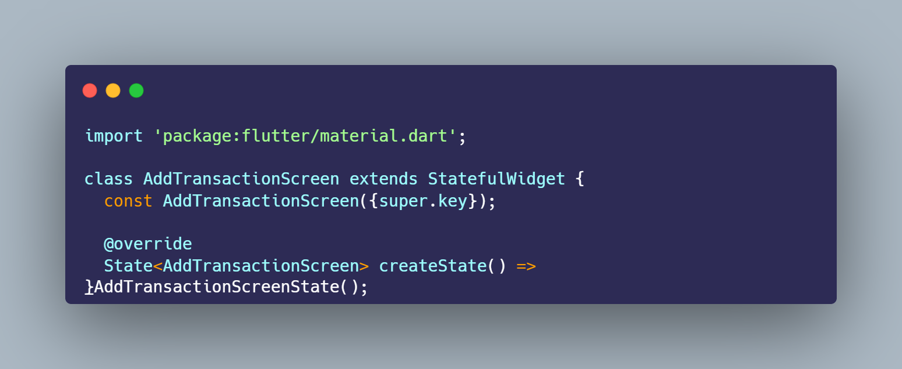
import 'package:flutter/material.dart'; memuat
seluruh widget Material Design. Kelas
AddTransactionScreen extends StatefulWidget
dipilih karena isi formulir akan terus berubah saat pengguna
mengetik dan memilih kategori, sedangkan
createState() menghubungkannya dengan kelas
_AddTransactionScreenState yang menampung seluruh
state.
Di dalam _AddTransactionScreenState disiapkan key
untuk memicu validasi, controller untuk judul dan nominal, serta
variabel untuk dropdown kategori.
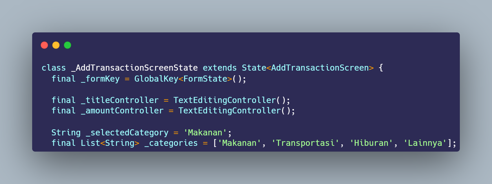
GlobalKey<FormState>() menjadi kunci untuk
mengontrol Form dan memicu validasi.
_titleController dan
_amountController membaca teks yang diketik
pengguna. _selectedCategory = 'Makanan' adalah
nilai awal dropdown, sedangkan _categories berisi
opsi Makanan, Transportasi, Hiburan, dan Lainnya.
Controller yang sudah tidak dipakai harus dilepaskan saat halaman ditutup.
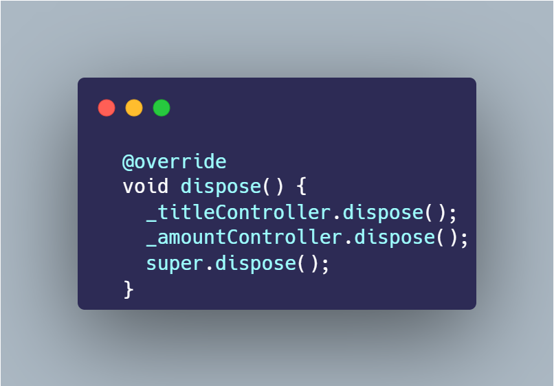
dispose() dipanggil Flutter ketika halaman
dihancurkan. Kedua controller dipanggil
dispose()-nya satu per satu, lalu
super.dispose() dijalankan untuk mencegah
memory leak.
Tampilan dibangun di dalam method
build() menggunakan Scaffold dengan AppBar dan body
yang dapat digulir.
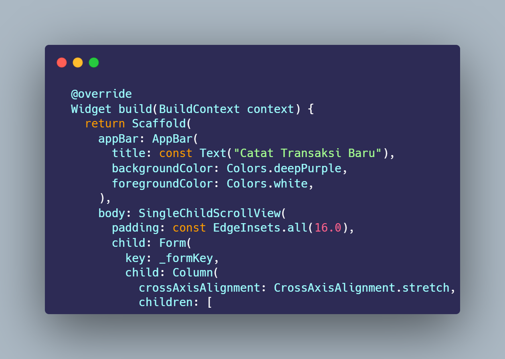
AppBar berjudul "Catat Transaksi Baru" diberi
warna Colors.deepPurple.
SingleChildScrollView mencegah error layout saat
keyboard muncul. Widget
Form(key: _formKey) membungkus
Column agar seluruh kolom di dalamnya terdaftar
pada key yang sama, dan
CrossAxisAlignment.stretch membuat anak-anaknya
melebar penuh.
Kolom pertama menerima judul transaksi dan tidak boleh dikosongkan.
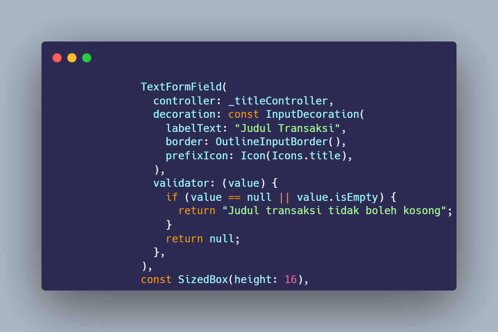
controller: _titleController menghubungkan kolom
dengan controller, sedangkan
InputDecoration mengatur label, garis tepi
OutlineInputBorder, dan ikon
Icons.title. Pada validator, jika
value == null || value.isEmpty maka dikembalikan
pesan "Judul transaksi tidak boleh kosong", selain itu
dikembalikan null yang berarti valid.
Kolom kedua menerima nominal uang, sehingga keyboard dibuat khusus angka dan formatnya divalidasi.
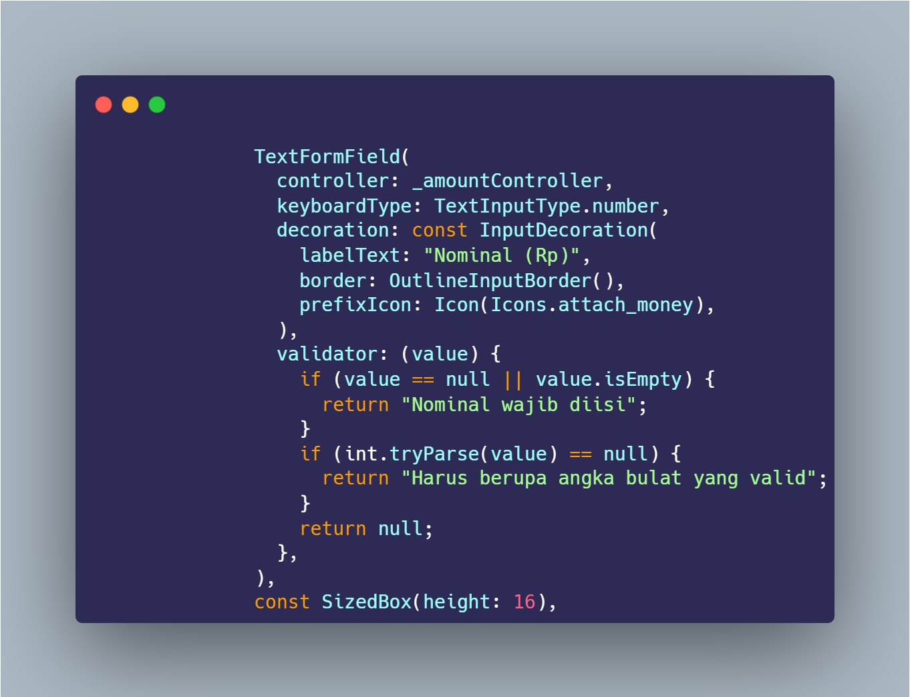
keyboardType: TextInputType.number memunculkan
keyboard angka. Validator memeriksa dua kondisi bertingkat:
kolom kosong menghasilkan "Nominal wajib diisi", lalu
int.tryParse(value) == null menghasilkan "Harus
berupa angka bulat yang valid".
int.tryParse mengembalikan null bila
teks bukan bilangan bulat, misalnya berisi huruf atau tanda
titik.
Pilihan kategori transaksi dibuat dengan dropdown statis yang
isinya diambil dari daftar _categories.
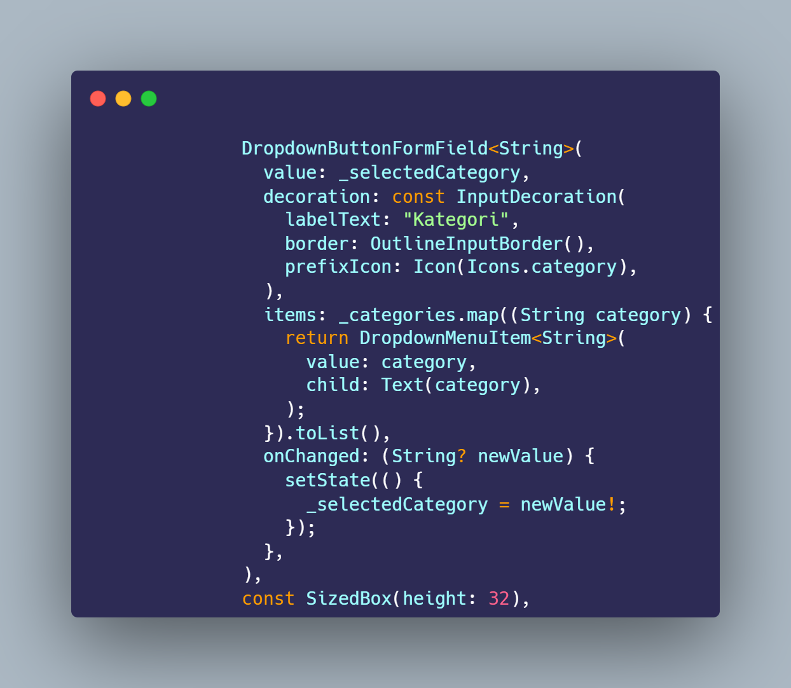
value: _selectedCategory menampilkan pilihan
aktif. Method .map() mengubah setiap string pada
_categories menjadi
DropdownMenuItem, lalu
.toList() mengumpulkannya. Pada
onChanged, setState() memperbarui
_selectedCategory dengan nilai baru sehingga
tampilan dropdown ikut berubah.
Tombol Simpan menjalankan seluruh validator sekaligus dan menampilkan SnackBar jika data valid.
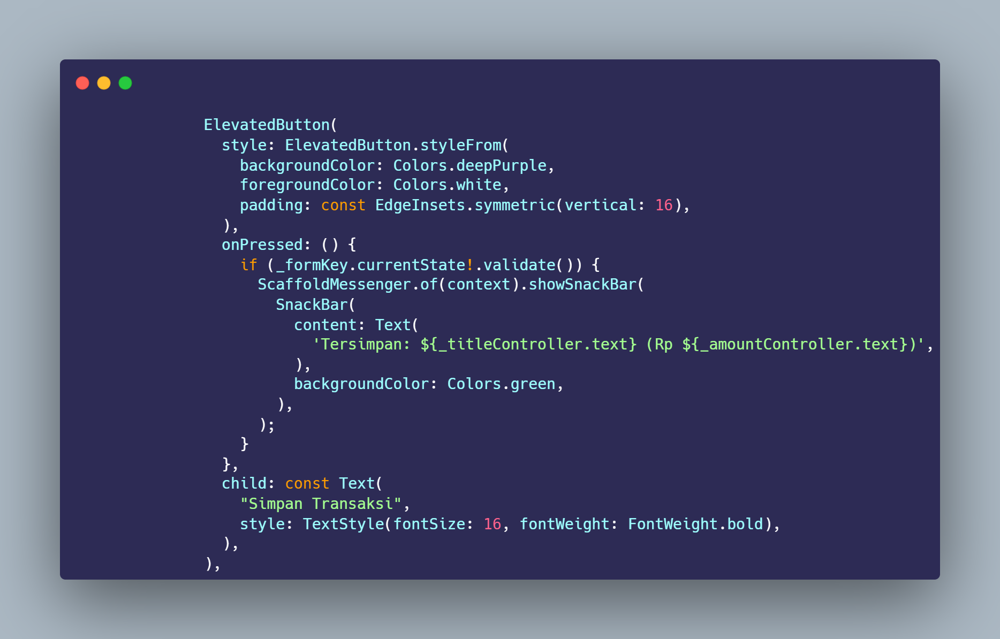
_formKey.currentState!.validate() menjalankan
semua validator; hasilnya true hanya bila
seluruhnya mengembalikan null. Jika lolos,
ScaffoldMessenger.of(context).showSnackBar()
menampilkan pesan "Tersimpan: [judul] (Rp [nominal])" berlatar
hijau, dengan nilai diambil dari controller.text.
Gaya tombol diatur lewat
ElevatedButton.styleFrom.
File main.dart bawaan diubah agar langsung membuka
halaman formulir.
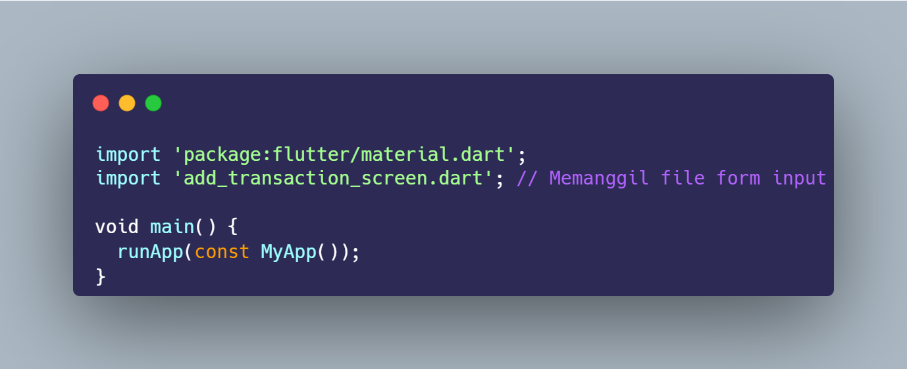
Baris
import 'add_transaction_screen.dart'; memanggil
file form yang dibuat sebelumnya. Fungsi
main() adalah titik awal aplikasi dan
runApp(const MyApp()) menjalankan widget root.
Kelas MyApp menjadi root widget yang mengatur
judul, tema, dan halaman awal.
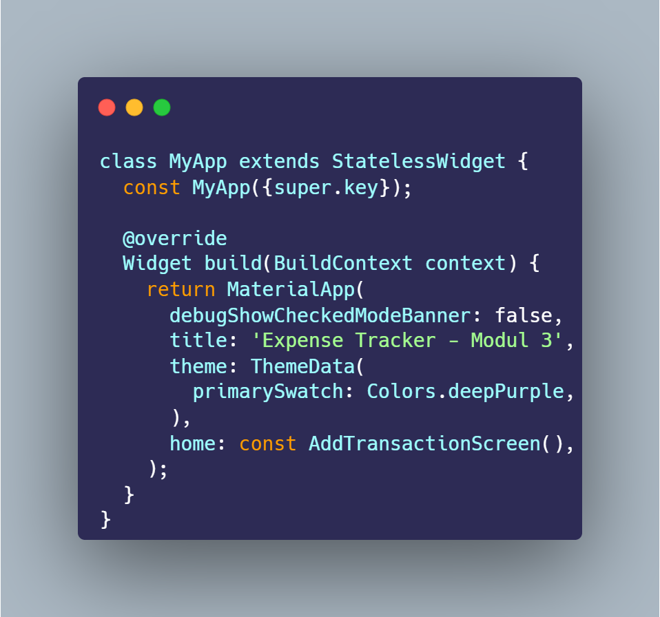
debugShowCheckedModeBanner: false menyembunyikan
label debug, title berisi "Expense Tracker -
Modul 3", dan
primarySwatch: Colors.deepPurple menjadi warna
tema. Properti
home: const AddTransactionScreen() membuat
aplikasi langsung membuka halaman form.
Aplikasi dijalankan lalu diuji dengan beberapa skenario: kolom dikosongkan, nominal diisi format salah, pemilihan kategori, dan seluruh input diisi benar.
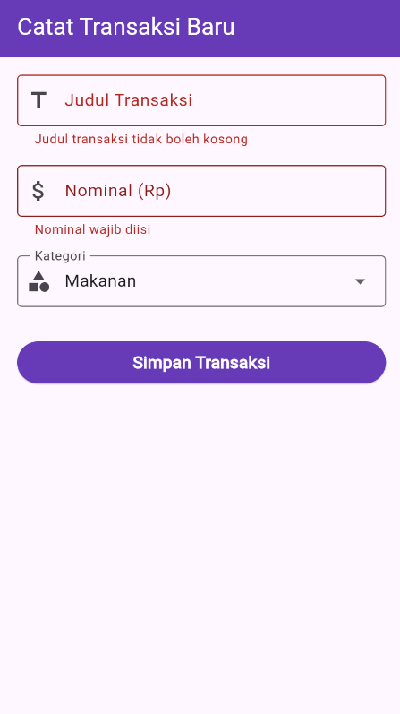
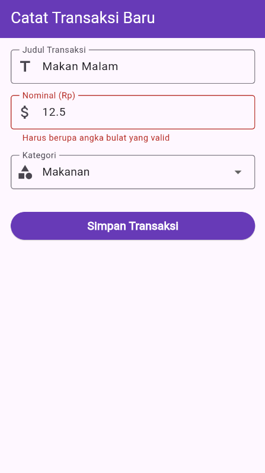
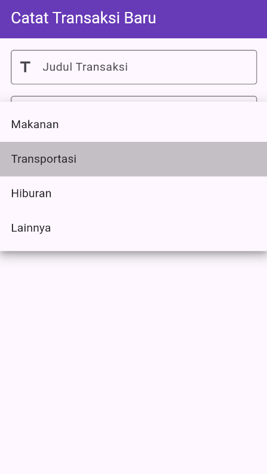
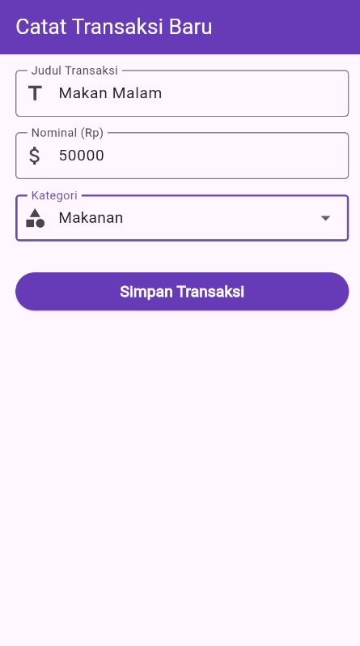
validator,
GlobalKey<FormState>, dan
DropdownButtonFormField pada
add_transaction_screen.dart berfungsi dengan
benar.
Kolom tanggal membutuhkan controller sendiri untuk menampung teks tanggal yang dipilih.
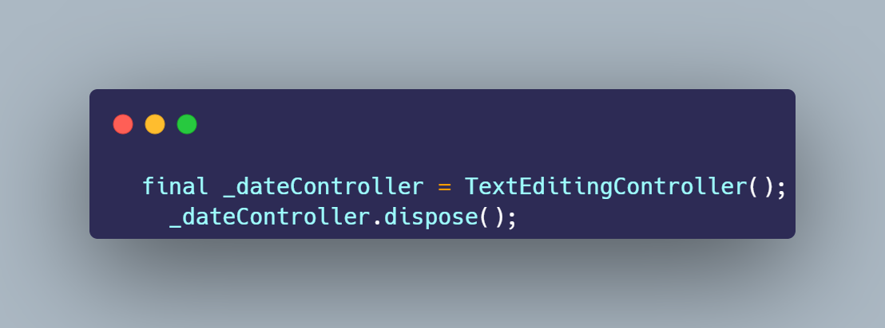
final _dateController = TextEditingController();
menyiapkan controller tanggal, dan
_dateController.dispose() ditambahkan pada
dispose() agar dibersihkan bersama controller
lainnya.
Fungsi asynchronous dibuat untuk membuka kalender dan menuliskan tanggal pilihan ke kolom.
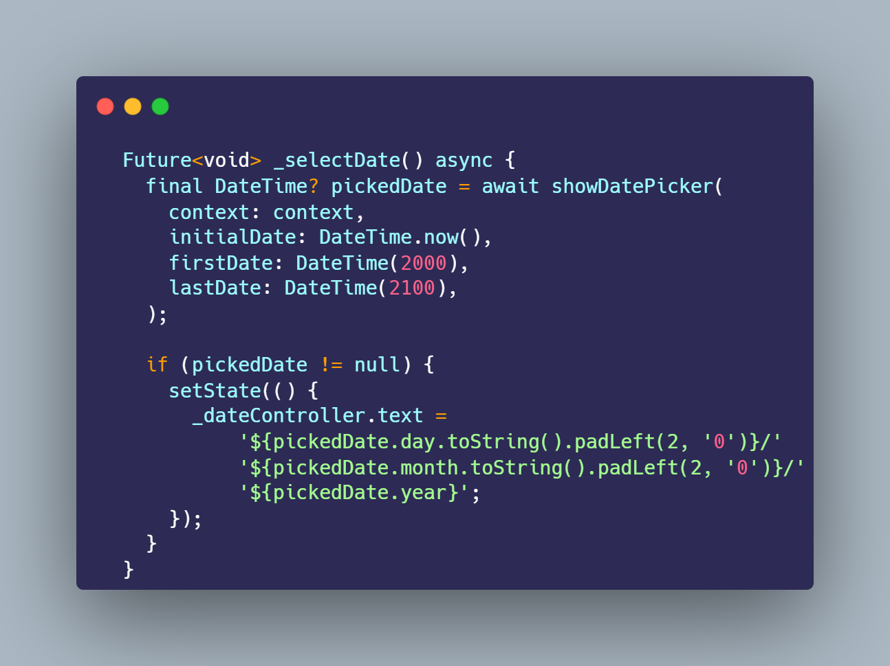
await showDatePicker(...) menampilkan kalender
dengan initialDate: DateTime.now() serta rentang
firstDate tahun 2000 sampai
lastDate tahun 2100, dan menghasilkan
DateTime?. Jika pickedDate != null,
setState() mengisi
_dateController.text dengan format DD/MM/YYYY;
padLeft(2, '0') menambahkan angka nol di depan
agar tanggal dan bulan selalu dua digit.
Kolom tanggal dibuat hanya-baca dan diisi lewat tombol plus yang
memanggil _selectDate.
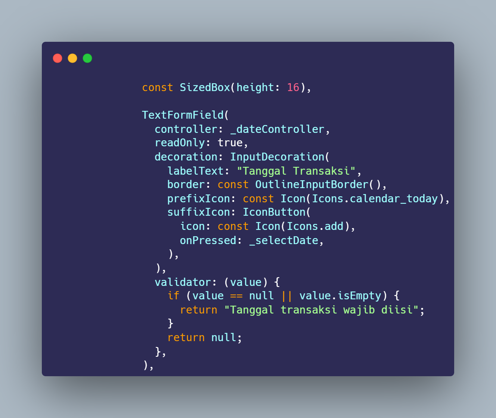
readOnly: true mencegah pengguna mengetik manual
sehingga format selalu benar. prefixIcon memakai
Icons.calendar_today, sedangkan
suffixIcon berupa
IconButton(icon: Icon(Icons.add), onPressed:
_selectDate)
sebagai tombol plus. Validator mengembalikan "Tanggal
transaksi wajib diisi" bila kolom kosong. Kolom ini disisipkan
sebelum tombol Simpan.
Pesan sukses diperbarui agar ikut menampilkan tanggal transaksi.
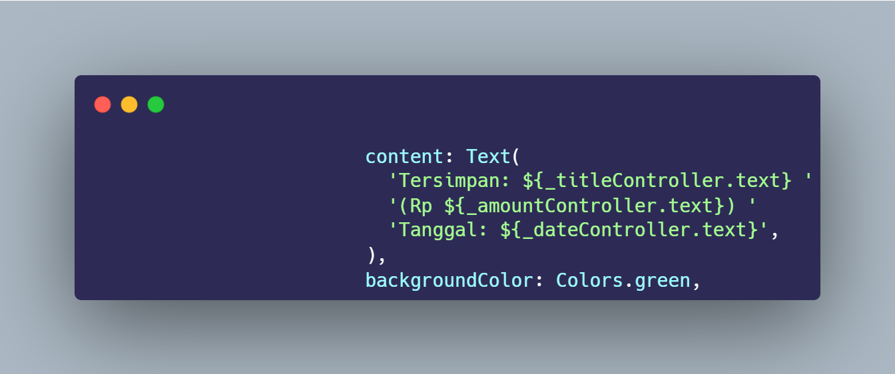
Teks SnackBar digabung menjadi
'Tersimpan: ${{_titleController.text}} (Rp
${{_amountController.text}}) Tanggal:
${{_dateController.text}}', sehingga ketiga isian tampil bersama.
Aplikasi dijalankan kembali untuk menguji validasi wajib diisi, tombol plus, dan penyimpanan lengkap.
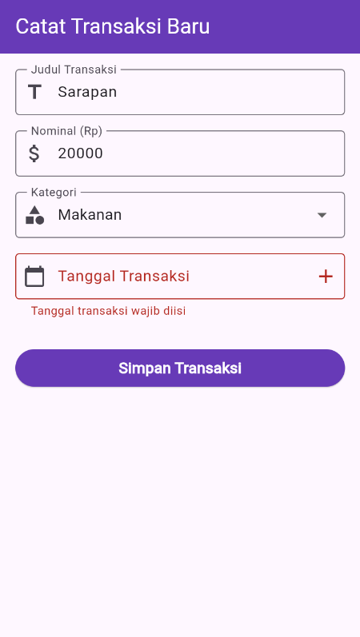
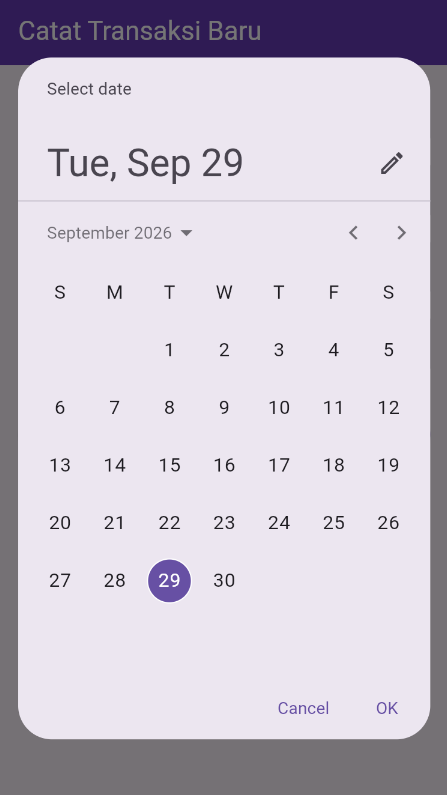
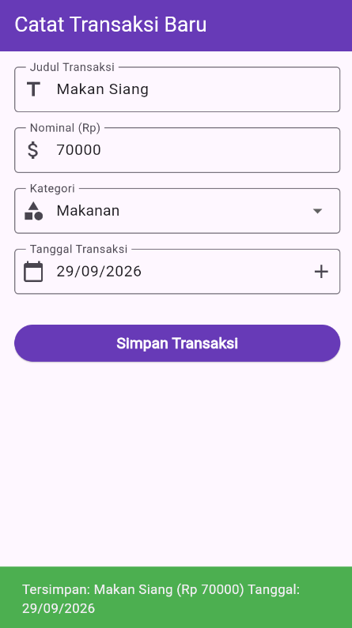
showDatePicker, dan
tanggal terpilih tampil pada kolom serta SnackBar.
Melalui Praktikum III ini, formulir pencatatan transaksi berhasil
dibuat lengkap dengan penangkapan teks, dropdown, dan validasi.
TextEditingController terbukti mampu membaca judul
dan nominal untuk ditampilkan kembali pada SnackBar,
dan dispose() membersihkan seluruh controller.
GlobalKey<FormState> beserta
validate() menjalankan semua validator sekaligus:
kolom kosong dan nominal yang bukan bilangan bulat ditolak dengan
pesan error merah, sedangkan input valid meloloskan proses simpan.
DropdownButtonFormField dengan
setState() memperbarui kategori terpilih pada
tampilan.
Pada latihan, input tanggal berhasil ditambahkan:
showDatePicker yang dipanggil dari tombol plus
mengisi kolom berformat DD/MM/YYYY, readOnly menjaga
format tetap konsisten, dan validator memastikan tanggal tidak
dikosongkan.
Berdasarkan seluruh tahapan praktikum, diperoleh kesimpulan sebagai berikut:
-
TextEditingController berfungsi membaca teks
pengguna dan wajib di-
dispose()untuk mencegah kebocoran memori. -
Form dengan
GlobalKey<FormState> memungkinkan seluruh
TextFormFielddivalidasi sekaligus dari satu titik lewatvalidate(). -
Validator mengembalikan
nulluntuk data valid danStringuntuk pesan error, sehingga data kosong atau berformat salah dapat dicegah sebelum disimpan. -
DropdownButtonFormField dan
setState()mempermudah pemilihan kategori dari opsi statis. -
showDatePickermemudahkan pengisian tanggal tanpa mengetik manual, sehingga format DD/MM/YYYY tetap konsisten.
Seluruh source code praktikum ini dapat diakses pada repository Github berikut: